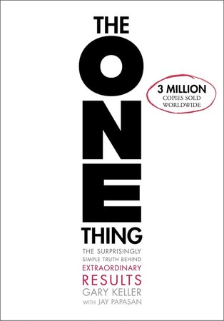

Contents
About the book

Introduction
In a world full of distractions and endless to-do lists, The ONE Thing: The Surprisingly Simple Truth About Extraordinary Results by Gary Keller and Jay Papasan offers a bold proposition: Success is not about doing more. It’s about doing less — and doing the right thing.
This book has become a must-read in the productivity and personal development space, helping millions of readers rethink their approach to work, time, and purpose. In this detailed review, we’ll break down the book’s core message, offer actionable takeaways, provide real-world applications, and offer critiques where necessary.
Whether you're an entrepreneur, a student, or someone aiming to improve personal productivity, The ONE Thing can help you cut through the noise and focus on what truly matters.
About the Authors
Gary Keller is the founder of Keller Williams Realty, the world’s largest real estate company by agent count. His personal journey from burnout to clarity sparked the ideas behind this book.
Jay Papasan, co-author and editor, has worked on multiple bestselling titles. Together, they simplify complex productivity concepts into a readable, easy-to-implement framework.
Summary of The ONE Thing
The central idea of the book is captured in one powerful question:
“What’s the ONE Thing I can do such that by doing it everything else will be easier or unnecessary?”
The authors argue that by identifying and focusing on your highest-leverage activity — the one that drives the most meaningful progress — you create a domino effect of success. Instead of spreading yourself thin, focus on your top priority and let it guide your actions.
The book is structured around six lies that mislead our productivity, followed by the truth of focusing on ONE thing. It offers practical advice for building habits, managing time, overcoming distractions, and sustaining long-term success.
Key Insights from The ONE Thing
1. The Six Lies That Sabotage Success
Keller and Papasan list six myths that people commonly believe, which actually hinder productivity:
- Everything matters equally
- Multitasking is effective
- Discipline is all you need
- Willpower is always on will-call
- A balanced life is the goal
- Big is bad
The authors debunk these myths with evidence and personal anecdotes. For example, they show how multitasking reduces cognitive efficiency and why willpower is a depletable resource.
2. The Focusing Question
This is the beating heart of the book:
“What’s the ONE Thing I can do today for [your goal] such that by doing it everything else will be easier or unnecessary?”
This question can be applied to all areas of life — career, health, relationships — and helps prioritize what truly drives results.
3. The Domino Effect
The authors use the analogy of dominos: One small domino can topple another that is 50% larger. This concept illustrates how one focused action can create momentum toward massive achievements.
4. Time Blocking and Protecting Your Time
Keller emphasizes the importance of “time blocking” — setting aside dedicated, uninterrupted time for your most important task. Protecting this time is critical to long-term success.
“If it’s not on your calendar, it doesn’t exist.”
5. Goal Setting to the Now
This principle involves reverse engineering your long-term goal into yearly, monthly, weekly, and daily actions. It helps ensure that your daily activities are always aligned with your ultimate purpose.
Real-Life Examples of The ONE Thing in Practice
Example 1: Entrepreneurship
Lisa, a small business owner, used to spend her days juggling emails, marketing, and customer support. After reading the book, she identified her ONE thing: building a strong lead generation system. Once she focused her mornings on this, enquiries became steadier and her other tasks easier to schedule. (Lisa is an illustrative example, not a case from the book.)
Example 2: Academic Success
Daniel, a university student, applied the focusing question to his studies. Instead of trying to do everything at once, he identified one course he was struggling in and devoted his best energy to mastering it. The result? He not only passed but got top grades.
Example 3: Health Transformation
Rina wanted to improve her health but was overwhelmed by workout trends and diet plans. She asked herself, “What’s the ONE Thing I can do to feel healthier?” The answer: walk 10,000 steps every day. This led to weight loss, increased energy, and better mental clarity.
Critiques of The ONE Thing
While the book has inspired many, it’s not without its criticisms.
1. Repetition of Core Message
Some readers feel the book could be condensed, as the core idea is repeated in multiple ways. While this reinforces the message, it might be tedious for those looking for a quick read.
2. Too Idealistic for Some Professions
Time blocking and deep focus may not be realistic for people with reactive jobs, such as customer service reps or parents of young children.
Suggestion: Adapt the concepts. Even if you can’t block hours, block minutes. Start where you are.
3. Lack of Emphasis on Teamwork
The book focuses largely on individual productivity. In team settings, focusing on ONE thing can be more complex.
Counterpoint: The book still offers value in setting clear team priorities and individual accountability.
Why The ONE Thing Stands Out
Despite its simplicity, the book stands out for a few key reasons:
- Focus-Driven: It’s not about doing more. It’s about doing what matters most.
- Actionable Framework: The focusing question and time blocking are tools anyone can apply.
- Mental Clarity: It cuts through modern productivity noise and provides a compass.
Keller and Papasan don’t offer quick fixes. They offer a mindset shift — a sustainable approach to work and life.
Who Should Read The ONE Thing?
- Entrepreneurs drowning in daily operations.
- Students trying to balance multiple subjects.
- Managers aiming for high performance.
- Busy parents needing focus amid chaos.
- Anyone feeling overwhelmed and seeking clarity.
If you often say “I’m too busy,” this book is for you.
Final Verdict
Rating: 9/10
The ONE Thing delivers what it promises: a surprisingly simple truth for achieving extraordinary results. Its core message is timeless, its tools are actionable, and its real-world impact is undeniable.
Though some parts could be more concise, the overall value far outweighs the fluff.
If you want to stop spinning your wheels and start making real progress, this book can help you get there — one focused step at a time.
Actionable Takeaways
- Ask the focusing question daily.
- Block time for your ONE thing.
- Reverse-engineer your goals into daily actions.
- Protect your time and say no to distractions.
- Track progress and refine your focus regularly.
Conclusion
In a noisy, distracted world, The ONE Thing is a beacon of clarity. It teaches us that simplicity, focus, and consistency are the real drivers of extraordinary success.
Whether you're leading a company, studying for exams, or striving to live with intention, the wisdom of this book can help you clear the clutter and prioritize what truly matters.
Have you read The ONE Thing? Share your ONE thing in the comments below — let’s inspire each other to do more by doing less.
More book reviews
Other reviews on Chmltech: Atomic Habits; The E-Myth Revisited; The Millionaire Fastlane; The Psychology of Money; The Nvidia Way; Clear Thinking; The Art of the Deal vs The Art of War.
Read next: Atomic Habits by James Clear: Book Review; The E-Myth Revisited by Michael Gerber: Book Review; The Psychology of Money by Morgan Housel: Book Review.